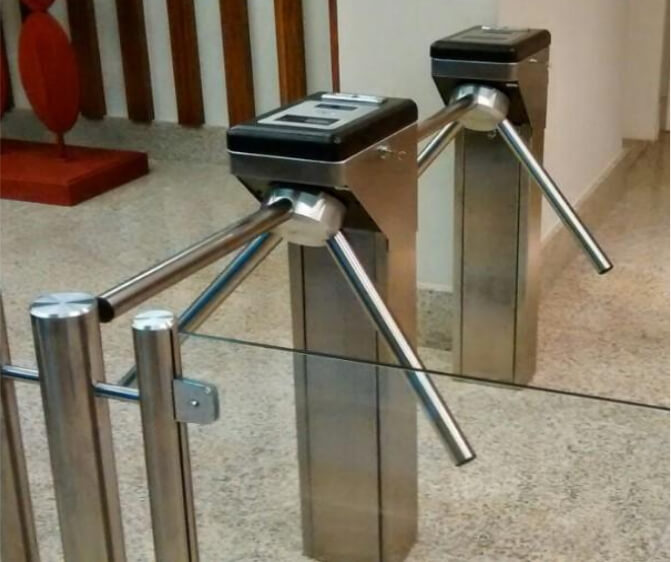
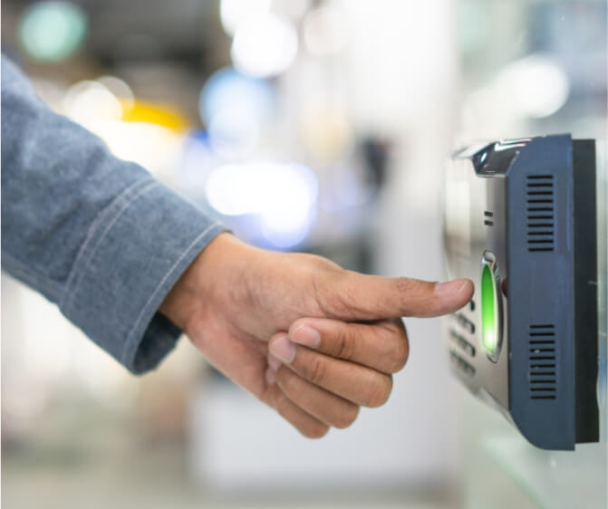
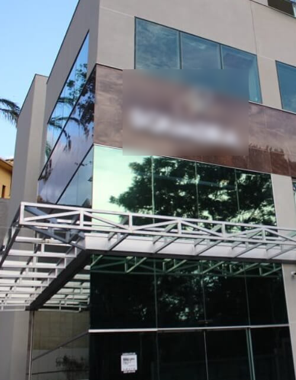

Bem Vindo a Empresa de Segurança.
Conheça um pouco mais.
Há mais de 15 anos atuamos no segmento de Controle de Ponto, Controle de Acesso e Tecnologia, sempre trazendo inovação em nossos produtos com a mais alta qualidade.
Sendo uma empresa em constante evolução, investe frequentemente em tecnologia inovadora e firmou uma
parceira com grandes líderes do mercado: fabricantes de
relógios de ponto e controles de acessos diversos e
desenvolvedora de software para controle de acesso, ponto e folha de pagamento.
Controle de Ponto, Controle de Acesso Soluções em Tecnologia.


Relógio de Ponto Homologados pela Portaria 1.510
Nossos Registradores de Ponto são a solução ideal para sua empresa reduzir custos, com o que a de melhor no mercado nacional.
Controle de Acesso, Catraca Eletrõnicas e Fechaduras
Saiba como sua empresa pode usar a tecnologia da ACTEC em controle de acesso, catracas eletrônicas e fechaduras biometricas.
Softwares para Gestão de Ponto 100% Web Online
As mudanças no perfil do trabalho exigiram adaptações da legislação para comportar situações como o teletrabalho, fale conosco.
Caso de Sucesso

Controle de Acesso Produto Um
Catracas Eletrônicas Produto Quatro
Sistema de Gestão Produto Dois.
Segurança em primeiro lugar.
Desenvolvemos uma linha revolucionária de produtos e sistemas para controle de acesso, inaugurando o
primeiro controlador do mercado com central de alarme integrada.
Quando o assunto é segurança, confiabilidade e alto desempenho são as nossas prioridades.
300+
Colaboradores
Acesso online
Suporte Técnico
Precisando de Suporte Técnico,
tem dúvidas em fechar a folha de ponto?.
Para oferecer serviços de excelência, criamos processos descomplicados para agilizar a manutenção nos equipamentos. Todos eles são monitorados de forma inteligente que se inicia com a abertura de Ordem de Serviço.
Actec
Actec com mais de 15 anos de experiência, somos especialista em Soluções em Relógios de Ponto, Controle de Acesso Facial, Biometrico, Antenas Tag UHF, Automação, Tecnologia e Identificação.
Actec Produzidos no Brasil - Revenda Autorizada
Actec
Empresa
Sobre a Actec
Acesse Loja Virtual
Solicite um Orçamento
Fale Conosco
Chame no Whatsapp
Siga no Instagram
Fale pelo Skype
Mais Acessados
Relógio de Ponto
Controle de Acesso
Catracas Eletrônicas
Cartões Proximidade
Software Ponto Web
Impressoras Térmicas
Suporte Técnico
Fale Conosco
Unidade - Contagem
(31) 3565-6200
Unidade - Belo Horizonte
(31) 3360-9590
Fale pelo Whatsapp
(31) 9'8407-8496
Envie-nós um Email
vendas@actecmg.com.br
.jpg)

.jpg)